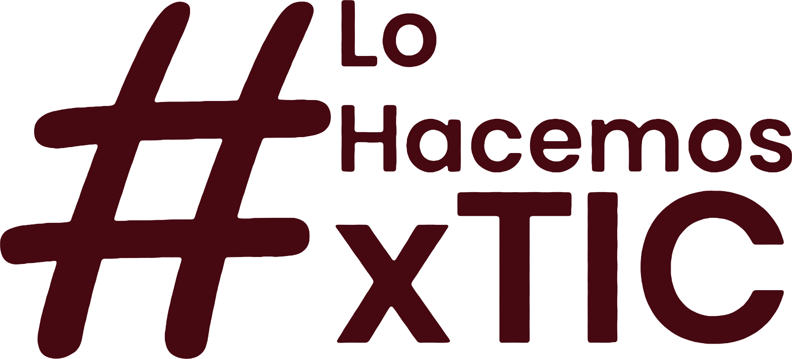
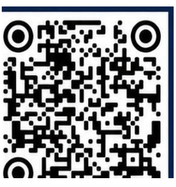

Investigación Interdisciplinar
Título del artículo



RESUMEN
Síntesis del problema, la metodología y los hallazgos principales del artículo, en una sola idea continua.
Introducción
Una línea que resume el planteamiento del problema y el objetivo del estudio.
Planteamiento del problema
Entradilla de una o dos líneas que enmarca el vacío de conocimiento que aborda el artículo.
- Contexto y antecedentes: qué se sabe hasta ahora.
- Vacío o problema identificado en la literatura.
- Objetivo general y pregunta de investigación.
Enfoque y procedimiento
Tipo de estudio
Enfoque, alcance y periodo de recolección de la información.
Participantes y técnicas
Población, criterios de selección y técnicas de recolección y análisis de datos.
Tabla 1. Título de la tabla.
| GÉNERO | HOJAS | GLÁNDULAS | FRUTOS |
|---|---|---|---|
| Variable A | Dato descriptivo de la primera fila | Dato | Dato |
| Variable B | Dato descriptivo de la segunda fila | Dato | Dato |
| Variable C | Dato descriptivo de la tercera fila | Dato | Dato |
Hallazgos principales
Qué significan los resultados
Diálogo de los hallazgos con la literatura citada en el artículo.
Alcance de los datos y condiciones que restringen la generalización.
Aporte del estudio y líneas de trabajo futuro.
Referencias
Apellido, A., Apellido, B. & Apellido, C. (2010). Título del artículo de revista. Nombre de la revista, 13 (2), 201-222. https://doi.org/xx.xxxx/xxxx
Apellido, G., Apellido, H. & Apellido, R. (2008). Título del libro. Editorial.
Apellido, I. C. (2001). Título del capítulo. En J. Editor y Y. Editora (eds.). Título del libro (pp. 135-237). Editorial universitaria.
Apellido-M., R. (2010). Título del trabajo de grado. [Trabajo de grado, Programa, Universidad].
Gracias por su atención
Autor 1 · correo@universidad.edu.co Grupo de investigación · Universidad
